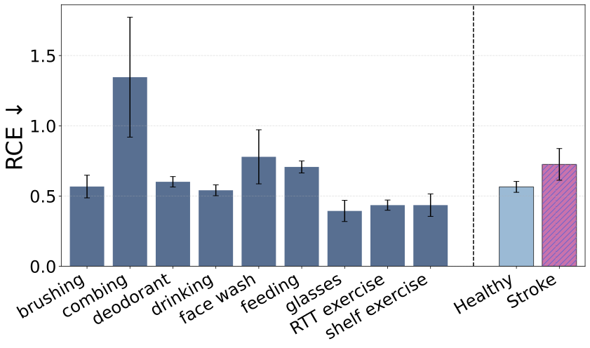
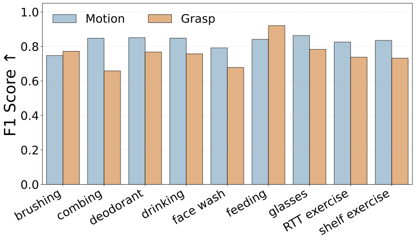
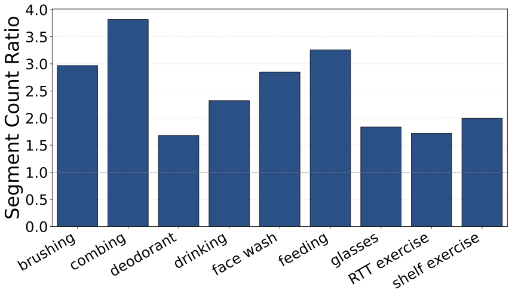
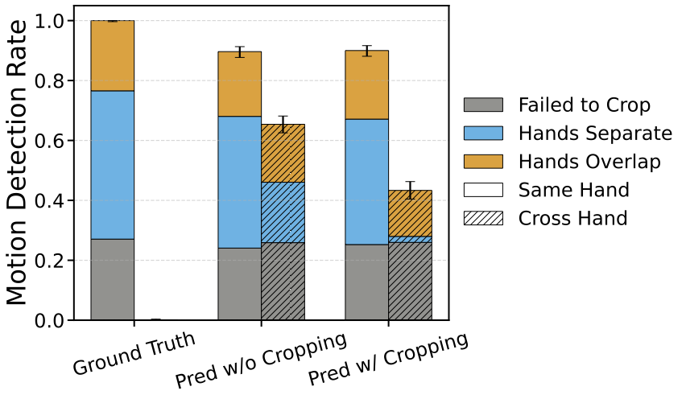
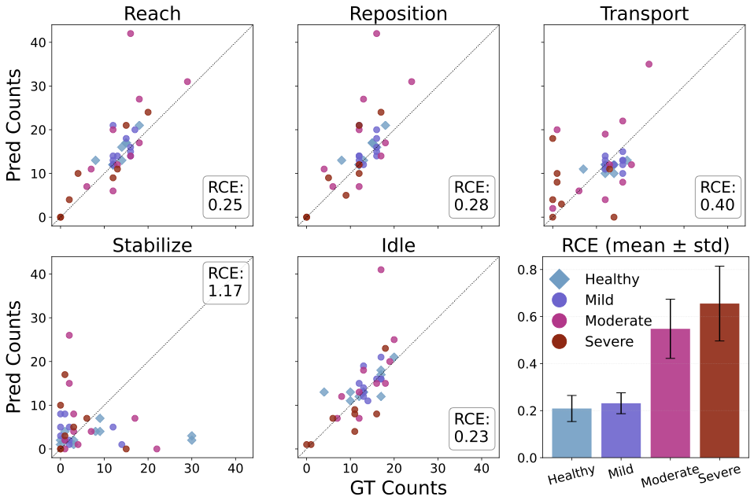

We formulated dose quantification as identification of five functional primitives: reach (move to contact a target object), reposition (move without future contact), transport (move a grasped object), stabilize (hold an object still), and idle (stand at ready). Rehabilitation dose is measured by counting these primitives.
Performance Across 15 VLMs
We evaluated 15 state-of-the-art VLMs from 6 model families (LLaVA-NeXT-Video, LLaVA-OneVision, NVILA, Qwen2.5-VL, InternVL3, InternVL3.5). The best models achieved only slightly better performance than a Markov baseline that doesn't use visual information, highlighting the difficulty of fine-grained motion understanding.

(a) Relative counting error by activity

(b) F1 scores for motion and grasp detection

(c) Over-segmentation: 1.5-4× more predicted segments

(d) VLMs struggle to distinguish left from right hand
Structured Tasks: RTT and Shelf
For highly structured repetitive tasks, we developed PRIM‑RS (Pose‑Refined promptIng Module RTT/Shelf), combining VLMs with pose‑guided hand cropping and light post‑processing. This achieved ~25% counting error for reach, reposition, and idle primitives in healthy and mildly impaired subjects.

Predicted vs. ground-truth primitive counts for RTT and shelf tasks
Key Finding: Current VLMs can detect motion and grasp with moderate accuracy (F1 > 0.7), but this is insufficient for precise dose quantification. Major challenges include over-segmentation, inability to distinguish left/right hands, and difficulty with speed-dependent primitives. However, for structured tasks, careful engineering can achieve reasonable performance for healthy and mildly impaired individuals.